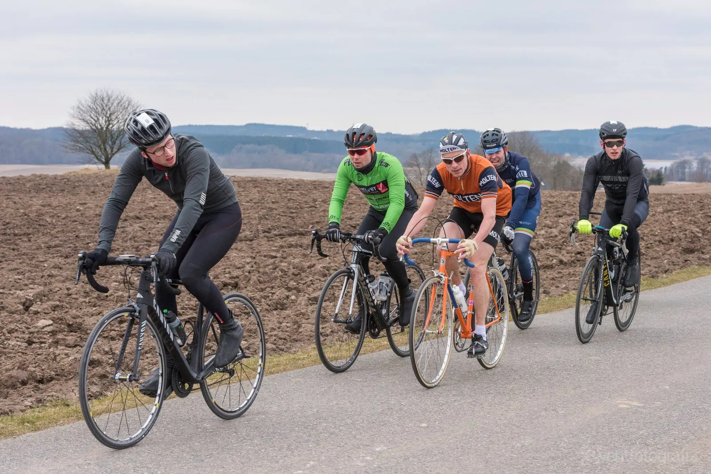
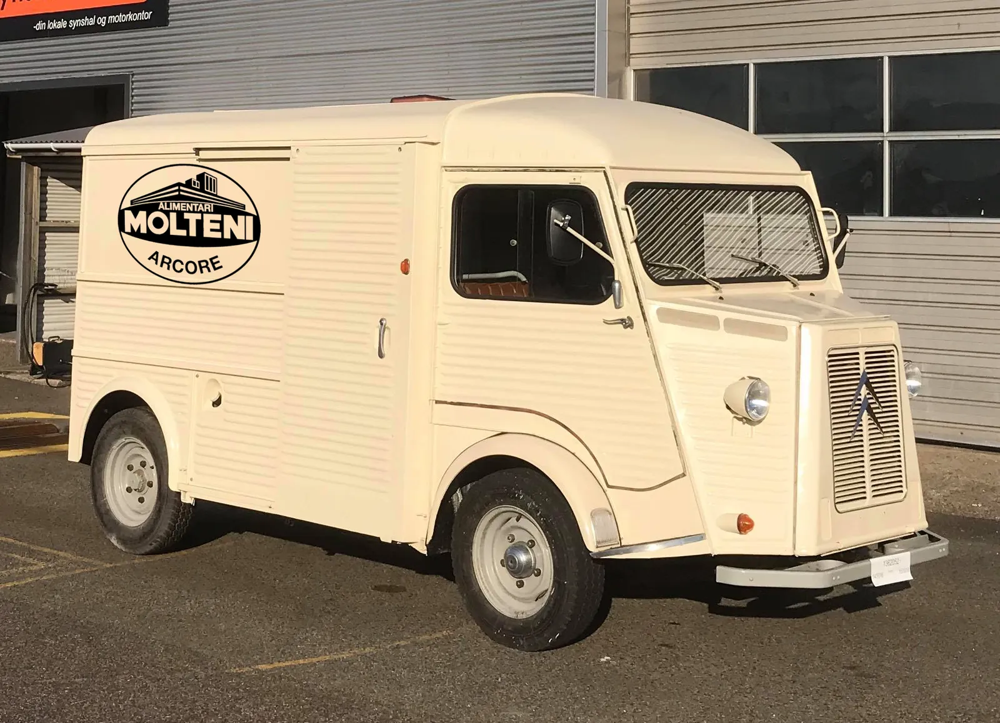

Optakt: Ronde van Borum 2019

Søndag den 7. april stiller Squadra Molteni til start ved den danske forårsklassiker Ronde van Borum med et storhold.
Ronde van Borum er en hyldest til cykelklassikeren Ronde van Vlaanderen og forårsklassikerne generelt. Løbet køres på 10 kuperede omgange af 7,4 km rundt om Skivholme Forsamlingshus.
Squadra Molteni stiller med 9 formstærke klassikerryttere og et toptunet holdbus.
– Vi er utålmodige. Det har været en lang vinter, og vi klar som aldrig før. Og kan kun betyde én ting: Vi kommer til at stikke i højre og venstre, udtaler en selvsikker løjtnant Kasper Sørensen.
Blume på podiet
Squadra Moltenis storhold består af: Niels Bjørnsteen, Kasper Sørensen, Kristian Blume, Eigil Leegaard, Jens Langergaard, Svend Seegert, Per Sandahl, Carsten Jacobsen og Jeppe Thiemer.
– Der er hamrende stærkt hold vi kommer med. Nu skal jeg jo ikke afsløre det hele her, men jeg kan da godt fortælle, at vi kører for at Kristian Blume kommer på podiet. Han har sateme noget i piberne i år, afslører Kaptajn Bjørnsteen.


Ruten ligger godt til Kristian, der også vil bruge løbet til at teste formen, inden han rejser til Belgien og kører Liege Bastogne Liege.
Holdbus, espresso og blodposer
I år har Squadra Molteni opgraderet deres vognpark med en holdbus. En klassisk Citroën HY er gennem de sidste to år blevet renoveret af Grane Maaløe.


– Ja, ud over at fungere som holdbus, hvor der før løbet vil være stærk espresso og friske blodposer til rytterne, har HY’en også en funktion som servicebil. Det er nemlig fra HY’en, at det berygtede og opsigtsvækkende skydedørscykelskift, kan ske fra, fortæller Grane Maaløe.
I Radio Moltenis udsendelse Citroën HY, tåclips og skydedørscykelskift, kan der høres om HY’en, skydedørscykelskift og meget mere.
Ronde van Borum køres søndag 7. april, med start kl. 10.00 ved Skivholme Forsamlingshus vest for Aarhus.